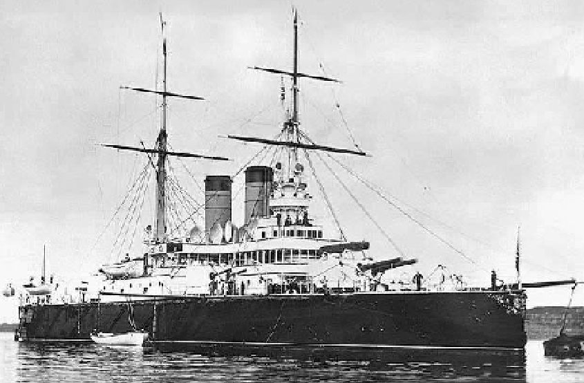
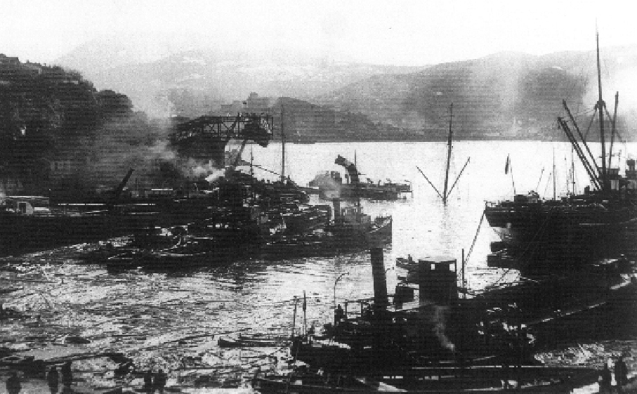
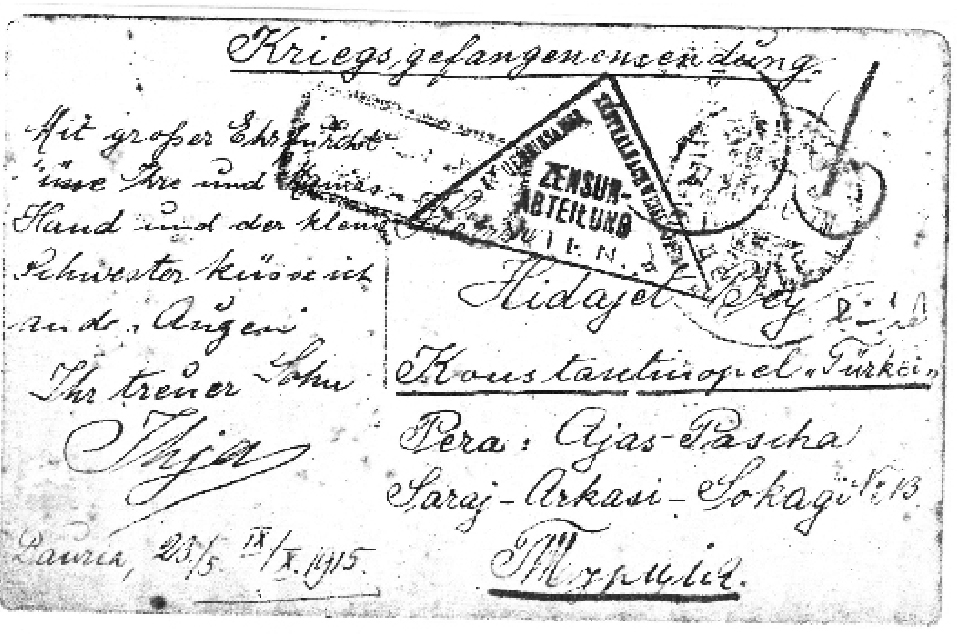
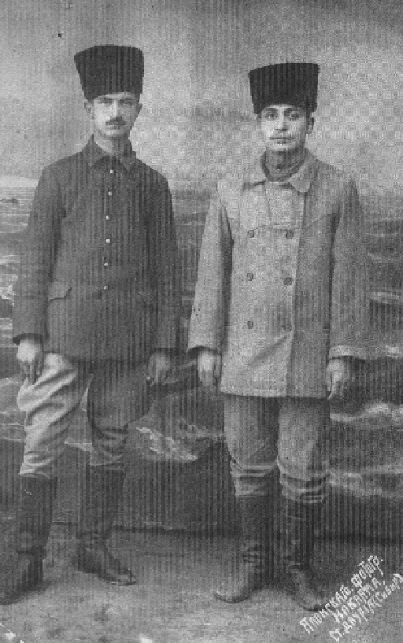

Eski yazı ile yazılmış ve de eskimiş, 1965 yılında vefat eden babam İhya Kaptan’a ait, iki sarı defter bana kardeşim Bilon tarafından iki yıl kadar önce verildiğinde, ne olduğunu bilmeden ve anlamadan incelemek için elime almıştım. Dikkatimi çeken defterlerin eskiliğine rağmen yazıların son derece temiz, itinalı, düzgün yazılmış olması bazı yerlerinde Kiril alfabesi ile yazıların bulunması ve 1965 yılında vefat eden ve 1914-1920 tarihleri arasında, gemisi batırılıp, denizden toplanıp, Rus savaş gemisince esir alınıp, Rusya’da, Sibirya’da 6 yıl esir kalan babam İhya Kaptan’a ait olduğunu bilmemdi.
Bu defterleri okuyabilecek, ne olduğunu anlayabilecek kimseyi, uzmanları bulabilmem ancak 2008 yılında dostlar yardımı ile mümkün oldu.
Yapı Kredi Yayınlarında Yücel Demirel, Ziver Öktem ve Cemile Kesim Moralıoğlu’nun uzunca çalışmaları sonunda bu defterlerin 1914’ten 1920’li yıllar arasında geçen esaret yıllarının, 6 Kasım 1914’te Rus donanmasınca Karadeniz Ereğli açıklarında batırılan gemilerden S/S Mithatpaşa’nın kâtibi Hasan Basri Efendi’ye ait birebir günlükler olduğu anlaşıldı.
Enver Paşa’nın atak ve yanlış kararı ile açılan Kafkas cephesinde büyük ikmal sıkıntısı yaşayan, düşman ve soğukla mücadele edip kırılan ordumuza askeri ve destek malzemeleri, hatta 4 uçak, bir uçak bölüğü ve asker götüren Mithatpaşa, Bezmialem ve Bahriahmer gemileri, yine Enver Paşa’nın emri ile korumasız olarak İstanbul Boğazı’ndan çıkmış ve Trabzon’a gitme emri almışlardı. O devirde Sarıkamış cephesine varış en kolay Trabzon üzerinden karayolu ile mümkün oluyordu. Bu gemiler o devrin okyanus aşırı seferler yapmış yolcu ve yük taşıyan büyük ve kıymetli gemileri idi. Bu gemilerin kaybı Birinci Dünya Savaşı’nın sonunu, savaşı kazanan ülkeleri, yani dünya tarihini de muhtemelen değiştirmiştir. Bu sırada Osmanlı donanmasına mensup savaş gemileri doğu Karadeniz ve kuzeyde Rus sahilleri civarında idi ve Sivastopol, Kerç Boğazı, Yalta, Odesa Novorosiski donanma tarafından topa tutulmuştu. Buna misilleme olarak Rusların Rostislav zırhlısı ve diğer savaş gemileri lojistik önemi büyük Zonguldak limanını topa tutmuş, gemileri batırmış, kömür yükleme tesislerine büyük zarar vermişlerdi. O devirde enerji kaynağı kömür, gemiler, trenler, fabrikalar ve süren hayat için büyük öneme sahipti. Zonguldak limanı da en büyük kömür ikmal limanı idi. İşte Rus gemileri bu bombardımandan dönerken bizim ikmal gemilerine rastlayıp batırdılar. Yavuz, Midilli, Hamidiye, Berk, Gayret gibi savaş gemilerimiz yardıma gelemediler. Baltık denizinde Ruslar tarafından batırılan Magdeburg kruvazöründen Ruslarca ele geçirilen şifreler sayesinde Rus donanması kısa sürede Karadeniz’in kontrolünü ele geçirdi.

Rostislav Zırhlısı (Prof. Dr. Bingür Sönmez Arşivi)
6 Kasım 1914 günü batırılan 3 gemimizde tam sayı belli olmamakla beraber üç bin civarında şehit verildiği saptanmaktadır. Denizcilik tarihi yayınları ve belgelerden anlaşılan, torpil, top ateşi ve diğer silahlarla yapılan atışlarla gemilerde yangınlar çıkmış, pek çok kimse şehit olmuş, sonra da gemiler batmıştır. Sağ kalanlardan bir kısmı fırtınalı ve soğuk Karadeniz sularında Rus gemilerine alınıp esir olarak Sivastopol’a getirilmişlerdir. Bu esirlerin bir kısmı yolda ölmüş, bir kısmı Sivastopol’da hastanede, bir kısmı da Sibirya’da, esarette vefat etmişlerdir. Sağ kalanların bir kısmı ise uzun yıllar sonra, Çarlığın yıkılması ve Bolşevik ihtilalinden sonra anavatana dönmeye muvaffak olmuşlardır ki S/S Bezmialem vapuru mülazım kaptanı İhya Kaptan da dönenlerden biridir.

Zonguldak Limanı Rus bombardımanı sonrası.
(Prof. Dr. Bedrettin Görgün Arşivi)
Batırılma sırasında esen şiddetli kuzey rüzgârları sayesinde denizde gemi ambar kapaklarına tutunup sağ kalabilen birkaç kişi ise sonradan sahile varabilmiş veya kurtarılmışlardır. Bu batırılma sonrası Karadeniz’de Türk donanması hakimiyeti kaybolmuştur. Yavuz zırhlısı 18 Kasım’da Sivastopol önlerinde 150 şehit, 59 yaralı vermiş, 26 Aralık’ta da boğaz ağzında mayına çarparak yaralanmıştır.
Sibirya’ya trenle bir hafta süren yolculuktan bir yıl sonra, İhya Kaptan (Görgün) ve Orhan Bey’in (Tuksavul) 5 Kasım 1915’te Dauria’dan gönderdiği kart ile kendi resimleri tarihi bir esaret hatırasıdır. Adres kısmında “Türkiye” kiril alfabesiyle yazılmış olup kart Almancadır. Muhtemelen Orhan Tuksavul tarafından babamın ağzından yazılmıştır. Orhan Bey Almanya’da gemi inşa mühendisliği okuyup Türkiye’ye dönünce askere alınıp Kafkas cephesine giden üç gemiye alınan Alman subaylarına tercüman olarak verilen Türk zabitidir. Kartta Almanca harp esiri gönderisi ve sansür bölümü mühürleri vardır. Kızılhaç (Salib-i Ahmer) ve Kızılay (Hilal-i Ahmer) bu esir gönderilerini o tarihlerde yerlerine ulaştırmaya aracı olurmuş.

Batırılmadan sonra denizden toplananların bir kısmı yolda veya Rusya ’da hastanelerde ve esir kamplarında yaralarından, tifo, tifüs gibi bulaşıcı hastalıklardan veya bakımsızlık, kötü gıda veya doğal sebeplerden hayatını kaybetmiş, hayatta kalanlarsa Çarlık Rusyasının yıkılmasından 4 ila 7 yıl gibi uzun zaman sonunda Türkiye’ye dönebilmiştir.
Babam İhya Kaptan 6 yıllık esaret sonunda çalışarak, biriktiği para ve yerli halktan gördüğü yardımlarla, esir kampından kaçıp sahte Arnavut pasaportu çıkartmış. Trenle Rusya’nın en doğusundaki (Rusya’da güneşin en erken doğduğu) Vladivostok limanına varmış, orada da bir gemiye tayfa yazılıp, Japon denizi, Hint Okyanusu, Süveyş Kanalı yoluyla Trieste’ye, oradan da Viyana’ya geçmiş ve trenle İstanbul’a gelebilmiştir. Çok ağır esaret şartlarında pek çok esir hayatını kaybetmiştir. Esirlerin sağ kalıp bazılarının kaçabilmeleri, aralarındaki kuvvetli yardımlaşma hissi, kamplarda ve civarlarındaki, insanlık ve yardım hisleri bulunan görevliler ile mahalli halkın ırk, cins, milliyet farkı gözetmemesi sayesinde olmakla beraber, genelde Tatarlar Türk esirlere çok yardım etmişlerdir. Uluslararası yardım kuruluşları muhtelif zamanlarda esirlere çeşitli yardım malzemeleri dağıtmışlardır. Rus devleti de hatıratta okunacağı üzere esirlere rütbelerine göre maaş bağlamıştır. Bunun dışında kamplarda ve izinle kamp dışında para karşılığı esirlerin çalışmasına müsaade edilmiştir. Mahalli halktan yardım ile çalışma olanakları da bulabilenler olmuştur. Sert iklim, yetersiz gıda, açlık ve hastalıklar pek çok esirin hayatını bitirmiştir. Bolşevik ihtilalinden sonra çarlık parası da değerini kaybetmiş. Fakat bazı esirler kendi iş güçleri ve ruh zenginlikleri ile sağ kalıp anavatana dönebilmişlerdir.
Savaştan çıkmış, işgal altındaki 1920 İstanbulunda halk büyük sıkıntı içindedir. Gelibolu’da, Sarıkamış’ta, Balkanlarda, Arabistan çölleri ve Mısır’da pek çok şehit verilmiş ve ülke ayakta kalmaya çalışırken, büyük kurtarıcı Mustafa Kemal, Anadolu ’da ülkeyi kurtarma çabası içindedir. İşte bu ortamda İstanbul işgal kuvvetleri ile dolu iken İhya Kaptan trenle Viyana’dan İstanbul’a gelip Sirkeci istasyonunda iniyor ve elindeki çantası ile Ayaspaşa’daki evine gitmek istiyor. Fakat tramvaya verecek parası olmadığından 6 yıl esaretten sonra ülkesine dönüşünde tramvaydan indiriliyor. Yürüyerek Ayaspaşa’daki evine varıyor. Büyük sürpriz, aile en büyük bayramını yaşıyor. Ertesi gün Seyrisefain idaresine giderek görev istiyor. İdare kendisini ölü biliyor. Ailesine yarım maaş bağlanmış. Sağ kalıp dönmesine seviniyorlar. Devlet sıkıntı içinde olmasına rağmen 6 yıllık maaşını tama iblağ ederek kendisine ödüyor. İhya Kaptan aldığı birikmiş maaş tutarını babasına veriyor. Aile bu para ve ailenin gayreti ile Beşiktaş Türkali mahallesinde bir ev alıyor. Yıllar sonra ben o evde dünyaya gelmişim. Seyrisefain İdaresinde hem batırılan gemiler dolayısıyla gemi sıkıntısı, hem de kaptan sıkıntısı var. Kendisini yandan çarklı Haydarpaşa vapuru kaptanlığına veriyorlar. Uzun yıllar uzakyol (Baide) süvarisi olarak çalışan İhya Kaptan İstanbul Liman İşletme Müdürlüğü’nden emekli oluyor ve 1965 yılında ömrünü tamamlıyor.
Esaret sırasında Hasan Basri Efendi’nin tuttuğu günlüklerin nasıl İhya Kaptanca yurda geldiği tam olarak bilinmemekle beraber, şimdi ilk defa yayınlanıyor. Bu üç gemi zabitan ve mürettebatının yaşantıları ve olaylar çok ilgi çekici ve düşündürücü. Bu günlükler o günlerin tarihsel olaylarını, gerçeklerini çok objektif ve yalın şekilde analiz edip belgelendiren, esirleri ve kendinin iç dünyasını anlatan, çaresizlik içinde yaşam savaşının ne olduğunu bizlere hissettiren bir eser oluyor, geçmişe olduğu kadar geleceğe de ışık tutuyor.
Prof. Dr. Bedrettin Görgün
26 Mart 2009 Göztepe, İstanbul